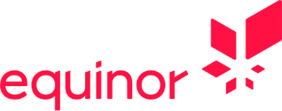

Equinor supplerer 170 millioner mennesker med energi daglig, og har de siste årene iverksatt en strategisk satsing på bærekraftig energi. Dette er en prosess som krever innovasjon, forretningsforståelse og et stort fokus på kvalitet. Kodeworks støtter Equinors forsknings- og digitaliseringsaktiviteter gjennom analyse, design, programmering og testing.